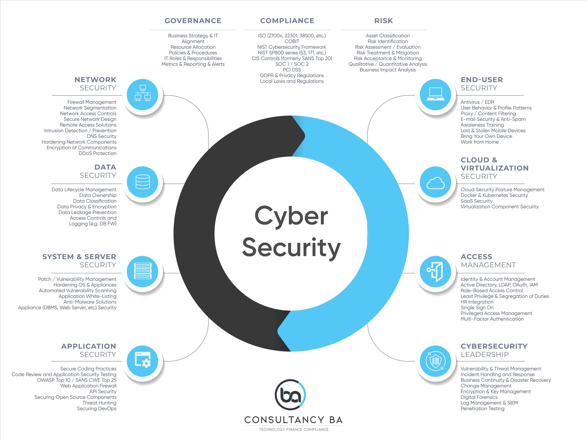

IT yönetişimi ve risk
Strateji uyumu, karar hakları, risk metodolojisi, politika, rol ve yönetim raporlamasını değerlendiririz.
- Risk iştahı ve risk kaydı
- Komite ve RACI
- KPI/KRI ve istisna
IT alanındaki düzenlemelerin kurum için ne gerektirdiğini süreç, sistem, risk, kontrol, sorumlu ve kanıt düzeyinde ortaya koyuyoruz. Kontrollerin yalnızca kâğıt üzerinde doğru tasarlanıp tasarlanmadığına değil, uygulamada gerçekten çalışıp çalışmadığına da bakıyoruz.
Her gerekliliğin hangi teknoloji varlığını, süreci ve riski ilgilendirdiğini belirleriz. Ardından kontrolün kim tarafından, ne sıklıkta ve hangi sistem üzerinde işletildiğini; geride hangi kanıtı bıraktığını inceleriz.
Strateji uyumu, karar hakları, risk metodolojisi, politika, rol ve yönetim raporlamasını değerlendiririz.
Kullanıcı yaşam döngüsü, ayrıcalıklı erişim, görevler ayrılığı ve periyodik yetki gözden geçirmelerini test ederiz.
Gereksinim, geliştirme, test, onay, sürüm, acil değişiklik ve kod güvenliği kontrollerini inceleriz.
Varlık, konfigürasyon, zafiyet, yama, log, olay, yedekleme ve kapasite kontrollerini değerlendiririz.
Girdi, işleme, çıktı, API/arayüz, mutabakat, hazırlayan-onaylayan ve veri kalitesi kontrollerini test ederiz.
Paylaşılan sorumluluk, bulut yapılandırması, tedarikçi riski, süreklilik ve çıkış yetkinliğini eşleştiririz.
Kontrol matrisini denetimde doğrudan kullanılabilecek ayrıntıda hazırlarız. Mevzuat dayanağını, riski, kontrolü, sorumluyu, çalışma sıklığını, sistemi, kanıtı, test adımını, örneklemi ve sonucu aynı kayıt üzerinde izleriz.
Standart ve çerçeveleri isimlerini sıralamak için değil, kontrol tasarımını ve test ölçütlerini belirlemek için kullanırız. Kapsamı kurum türüne, yetkili otoriteye, hizmet modeline, teknoloji mimarisine ve beklenen güvence düzeyine göre oluştururuz.
Karar hakları, politika, rol, kaynak, risk, performans ve yönetim gözetimi.
Bilgi güvenliği yönetişimi, kontrol kapsamı, risk işleme ve teknik koruma önlemleri.
Hizmet organizasyonu kontrolleri, tasarım, çalışma etkinliği ve kanıt beklentisi.
İş sürekliliği ve kurtarma yönetimi ile kart verisi ortamı gereklilikleri.
Veri, dış hizmet, teknoloji ve hesap verebilirliğe ilişkin uygulanabilir yasal ve gözetim gereklilikleri.
Paylaşılan sorumluluk, yapılandırma, uygulama güvenliği, veri kontrolleri ve genişletilmiş teknik test.
Siber güvenliği yalnızca teknik zafiyetler üzerinden değerlendirmeyiz. Yönetişim, risk yönetimi, kimlik ve erişim, güvenli yazılım geliştirme, bulut, üçüncü taraflar, olay müdahalesi ve dayanıklılık kontrollerinin tasarımını ve işleyişini kanıtlarıyla birlikte inceleriz.

Denetim kapsamını ve incelenecek alanları belirler, süreç sahipleriyle sistem üzerinden ilerler ve kontrollerin tasarımını ve işleyişini kanıtlarıyla test ederiz. Tespitleri kök nedeninden düzeltici aksiyona, yeniden testten kapanış görüşüne kadar izleriz.